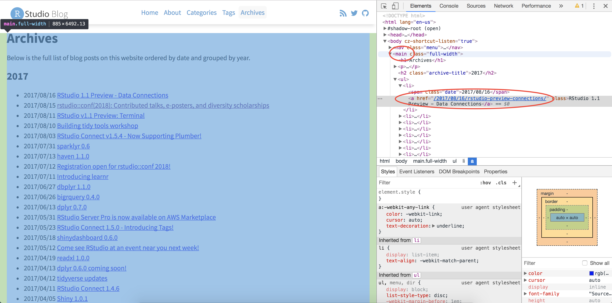
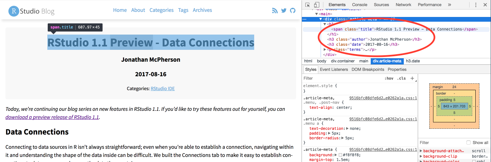
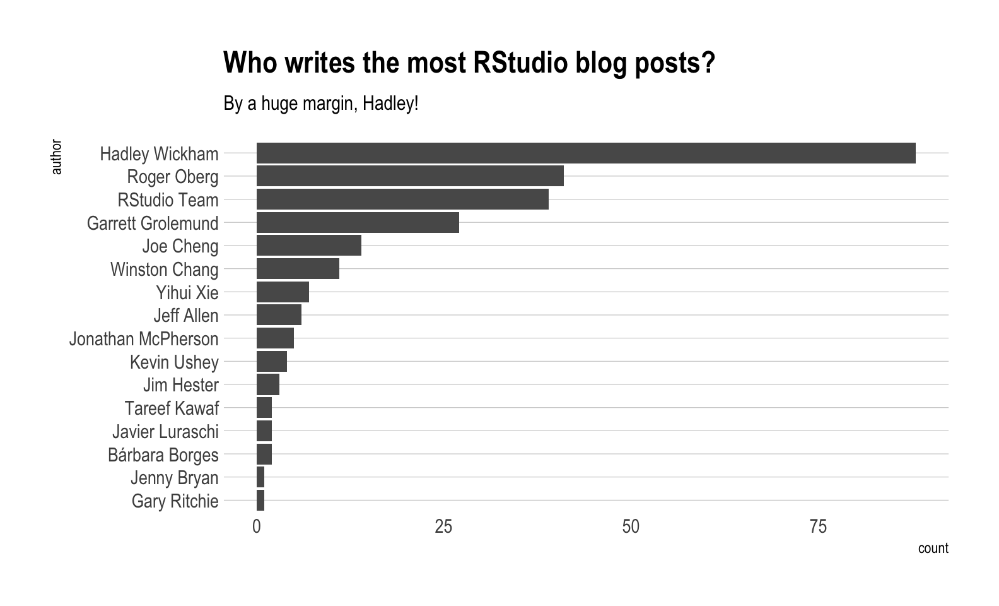
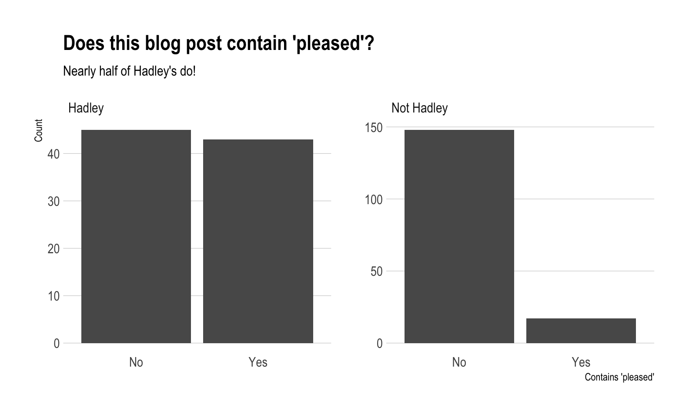

Introduction
Awhile back, I saw a conversation on twitter about how Hadley uses the word “pleased” very often when introducing a new blog post (I couldn’t seem to find this tweet anymore. Can anyone help?). Out of curiousity, and to flex my R web scraping muscles a bit, I’ve decided to analyze the 240+ blog posts that RStudio has put out since 2011. This post will do a few things:
- Scrape the RStudio blog archive page to construct URL links to each blog post
- Scrape the blog post text and metadata from each post
- Use a bit of
tidytextfor some exploratory analysis - Perform a statistical test to compare Hadley’s use of “pleased” to the other blog post authors
Spoiler alert: Hadley uses “pleased” ALOT.
Required packages
Extract the HTML from the RStudio blog archive
To be able to extract the text from each blog post, we first need to have a link to that blog post. Luckily, RStudio keeps an up to date archive page that we can scrape. Using xml2, we can get the HTML off that page.
archive_page <- "https://blog.rstudio.com/archives/"
archive_html <- read_html(archive_page)
# Doesn't seem very useful...yet
archive_html#> {xml_document}
#> <html lang="en-us">
#> [1] <head>\n<meta http-equiv="Content-Type" content="text/html; charset=UTF-8">\n<meta charset="u ...
#> [2] <body>\n <nav class="menu"><svg version="1.1" xmlns="http://www.w3.org/2000/svg" xmlns:xli ...Now we use a bit of rvest magic combined with the HTML inspector in Chrome to figure out which elements contain the info we need (I also highly recommend SelectorGadget for this kind of work). Looking at the image below, you can see that all of the links are contained within the main tag as a tags (links).

The code below extracts all of the links, and then adds the prefix containing the base URL of the site.
links <- archive_html %>%
# Only the "main" body of the archive
html_nodes("main") %>%
# Grab any node that is a link
html_nodes("a") %>%
# Extract the hyperlink reference from those link tags
# The hyperlink is an attribute as opposed to a node
html_attr("href") %>%
# Prefix them all with the base URL
paste0("http://blog.rstudio.com", .)
head(links)#> [1] "http://blog.rstudio.com/2017/08/25/rstudio-conf-2018-early-bird-pricing/"
#> [2] "http://blog.rstudio.com/2017/08/22/rstudio-v1-1-preview-object-explorer/"
#> [3] "http://blog.rstudio.com/2017/08/18/google-cloud-platform/"
#> [4] "http://blog.rstudio.com/2017/08/16/rstudio-preview-connections/"
#> [5] "http://blog.rstudio.com/2017/08/15/contributed-talks-diversity-scholarships/"
#> [6] "http://blog.rstudio.com/2017/08/15/shiny-1-0-4/"HTML from each blog post
Now that we have every link, we’re ready to extract the HTML from each individual blog post. To make things more manageable, we start by creating a tibble, and then using the mutate + map combination to created a column of XML Nodesets (we will use this combination a lot). Each nodeset contains the HTML for that blog post (exactly like the HTML for the archive page).
#> [[1]]
#> {xml_nodeset (1)}
#> [1] <main><div class="article-meta">\n<h1><span class="title">Newer to R? rstudio::conf 2018 is fo ...Meta information
Before extracting the blog post itself, lets grab the meta information about each post, specifically:
- Author
- Title
- Date
- Category
- Tags
In the exploratory analysis, we will use author and title, but the other information might be useful for future analysis.
Looking at the first blog post, the Author, Date, and Title are all HTML class names that we can feed into rvest to extract that information.

In the code below, an example of extracting the author information is shown. To select a HTML class (like “author”) as opposed to a tag (like “main”), we have to put a period in front of the class name. Once the html node we are interested in has been identified, we can extract the text for that node using html_text().
blog_data$main[[1]] %>%
html_nodes(".author") %>%
html_text()#> [1] "Roger Oberg"To scale up to grab the author for all posts, we use map_chr() since we want a character of the author’s name returned.
#> [1] "Roger Oberg" "Kevin Ushey" "Roger Oberg"
#> [4] "Jonathan McPherson" "Hadley Wickham" "Winston Chang"
#> [7] "Gary Ritchie" "Roger Oberg" "Jeff Allen"
#> [10] "Javier Luraschi"Finally, notice that if we switch ".author" with ".title" or ".date" then we can grab that information as well. This kind of thinking means that we should create a function for extracting these pieces of information!
extract_info <- function(html, class_name) {
map_chr(
# Given the list of main HTMLs
.x = html,
# Extract the text we are interested in for each one
.f = ~html_nodes(.x, class_name) %>%
html_text())
}
# Extract the data
blog_data <- blog_data %>%
mutate(
author = extract_info(main, ".author"),
title = extract_info(main, ".title"),
date = extract_info(main, ".date")
)select(blog_data, author, date)#> # A tibble: 253 × 2
#> author date
#> <chr> <chr>
#> 1 Roger Oberg 2017-08-25
#> 2 Kevin Ushey 2017-08-22
#> 3 Roger Oberg 2017-08-18
#> 4 Jonathan McPherson 2017-08-16
#> 5 Hadley Wickham 2017-08-15
#> 6 Winston Chang 2017-08-15
#> 7 Gary Ritchie 2017-08-11
#> 8 Roger Oberg 2017-08-10
#> 9 Jeff Allen 2017-08-03
#> 10 Javier Luraschi 2017-07-31
#> # … with 243 more rowsselect(blog_data, title)#> # A tibble: 253 × 1
#> title
#> <chr>
#> 1 Newer to R? rstudio::conf 2018 is for you! Early bird pricing ends August 31.
#> 2 RStudio v1.1 Preview - Object Explorer
#> 3 RStudio Server Pro is ready for BigQuery on the Google Cloud Platform
#> 4 RStudio 1.1 Preview - Data Connections
#> 5 rstudio::conf(2018): Contributed talks, e-posters, and diversity scholarships
#> 6 Shiny 1.0.4
#> 7 RStudio v1.1 Preview: Terminal
#> 8 Building tidy tools workshop
#> 9 RStudio Connect v1.5.4 - Now Supporting Plumber!
#> 10 sparklyr 0.6
#> # … with 243 more rowsThe blog post itself
Finally, to extract the blog post itself, we can notice that each piece of text in the post is inside of a paragraph tag (p). Being careful to avoid the ".terms" class that contained the categories and tags, which also happens to be in a paragraph tag, we can extract the full blog posts. To ignore the ".terms" class, use the :not() selector.
select(blog_data, text)
#> # A tibble: 253 × 1
#> text
#> <chr>
#> 1 "Immersion is among the most effective ways to learn any language. Immersing…
#> 2 "Today, we’re continuing our blog series on new features in RStudio 1.1. If …
#> 3 "RStudio is excited to announce the availability of RStudio Server Pro on th…
#> 4 "Today, we’re continuing our blog series on new features in RStudio 1.1. If …
#> 5 "rstudio::conf, the conference on all things R and RStudio, will take place …
#> 6 "Shiny 1.0.4 is now available on CRAN. To install it, run: For most Shiny us…
#> 7 "Today we’re excited to announce availability of our first Preview Release f…
#> 8 "Have you embraced the tidyverse? Do you now want to expand it to meet your …
#> 9 "We’re thrilled to announce support for hosting Plumber APIs in RStudio Conn…
#> 10 "We’re excited to announce a new release of the sparklyr package, available …
#> # … with 243 more rowsWho writes the most posts?
Now that we have all of this data, what can we do with it? To start with, who writes the most posts?
blog_data %>%
group_by(author) %>%
summarise(count = n()) %>%
mutate(author = reorder(author, count)) %>%
# Create a bar graph of author counts
ggplot(mapping = aes(x = author, y = count)) +
geom_col() +
coord_flip() +
labs(title = "Who writes the most RStudio blog posts?",
subtitle = "By a huge margin, Hadley!") +
# Shoutout to Bob Rudis for the always fantastic themes
hrbrthemes::theme_ipsum(grid = "Y")
Tidytext
I’ve never used tidytext before today, but to get our feet wet, let’s create a tokenized tidy version of our data. By using unnest_tokens() the data will be reshaped to a long format holding 1 word per row, for each blog post. This tidy format lends itself to all manner of analysis, and a number of them are outlined in Julia Silge and David Robinson’s Text Mining with R.
tokenized_blog <- blog_data %>%
mutate(short_title = str_sub(title, end = 15)) %>%
select(title, short_title, author, date, text) %>%
unnest_tokens(output = word, input = text)
select(tokenized_blog, short_title, word)
#> # A tibble: 85,761 × 2
#> short_title word
#> <chr> <chr>
#> 1 Newer to R? rst immersion
#> 2 Newer to R? rst is
#> 3 Newer to R? rst among
#> 4 Newer to R? rst the
#> 5 Newer to R? rst most
#> 6 Newer to R? rst effective
#> 7 Newer to R? rst ways
#> 8 Newer to R? rst to
#> 9 Newer to R? rst learn
#> 10 Newer to R? rst any
#> # … with 85,751 more rowsRemove stop words
A number of words like “a” or “the” are included in the blog that don’t really add value to a text analysis. These stop words can be removed using an anti_join() with the stop_words dataset that comes with tidytext. After removing stop words, the number of rows was cut in half!
tokenized_blog <- tokenized_blog %>%
anti_join(stop_words, by = "word") %>%
arrange(desc(date))
select(tokenized_blog, short_title, word)
#> # A tibble: 40,315 × 2
#> short_title word
#> <chr> <chr>
#> 1 Newer to R? rst immersion
#> 2 Newer to R? rst effective
#> 3 Newer to R? rst learn
#> 4 Newer to R? rst language
#> 5 Newer to R? rst immersing
#> 6 Newer to R? rst advanced
#> 7 Newer to R? rst users
#> 8 Newer to R? rst improve
#> 9 Newer to R? rst language
#> 10 Newer to R? rst rare
#> # … with 40,305 more rowsTop 15 words overall
Out of pure curiousity, what are the top 15 words for all of the blog posts?
Is Hadley more “pleased” than everyone else?
As mentioned at the beginning of the post, Hadley apparently uses the word “pleased” in his blog posts an above average number of times. Can we verify this statistically?
Our null hypothesis is that the proportion of blog posts that use the word “pleased” written by Hadley is less than or equal to the proportion of those written by the rest of the RStudio team.
More simply, our null is that Hadley uses “pleased” less than or the same as the rest of the team.
Let’s check visually to compare the two groups of posts.
pleased <- tokenized_blog %>%
# Group by blog post
group_by(title) %>%
# If the blog post contains "pleased" put yes, otherwise no
# Add a column checking if the author was Hadley
mutate(
contains_pleased = case_when(
"pleased" %in% word ~ "Yes",
TRUE ~ "No"),
is_hadley = case_when(
author == "Hadley Wickham" ~ "Hadley",
TRUE ~ "Not Hadley")
) %>%
# Remove all duplicates now
distinct(title, contains_pleased, is_hadley)
pleased %>%
ggplot(aes(x = contains_pleased)) +
geom_bar() +
facet_wrap(~is_hadley, scales = "free_y") +
labs(title = "Does this blog post contain 'pleased'?",
subtitle = "Nearly half of Hadley's do!",
x = "Contains 'pleased'",
y = "Count") +
hrbrthemes::theme_ipsum(grid = "Y")
Is there a statistical difference here?
To check if there is a statistical difference, we will use a test for difference in proportions contained in the R function, prop.test(). First, we need a continency table of the counts. Given the current form of our dataset, this isn’t too hard with the table() function from base R.
contingency_table <- pleased %>%
ungroup() %>%
select(is_hadley, contains_pleased) %>%
# Order the factor so Yes is before No for easy interpretation
mutate(contains_pleased = factor(contains_pleased, levels = c("Yes", "No"))) %>%
table()
contingency_table
#> contains_pleased
#> is_hadley Yes No
#> Hadley 43 45
#> Not Hadley 17 148From our null hypothesis, we want to perform a one sided test. The alternative to our null is that Hadley uses “pleased” more than the rest of the RStudio team. For this reason, we specify alternative = "greater".
test_prop <- contingency_table %>%
prop.test(alternative = "greater")
test_prop
#>
#> 2-sample test for equality of proportions with continuity correction
#>
#> data: .
#> X-squared = 45.063, df = 1, p-value = 9.541e-12
#> alternative hypothesis: greater
#> 95 percent confidence interval:
#> 0.2809899 1.0000000
#> sample estimates:
#> prop 1 prop 2
#> 0.4886364 0.1030303We could also tidy this up with broom if we were inclined to.
broom::tidy(test_prop)
#> # A tibble: 1 × 9
#> estimate1 estimate2 statistic p.value parameter conf.low conf.high method
#> <dbl> <dbl> <dbl> <dbl> <dbl> <dbl> <dbl> <chr>
#> 1 0.489 0.103 45.1 9.54e-12 1 0.281 1 2-sample …
#> # … with 1 more variable: alternative <chr>Test conclusion
- 48.86% of Hadley’s posts contain “pleased”
- 10.3% of the rest of the RStudio team’s posts contain “pleased”
- With a p-value of 9.5414477^{-12}, we reject the null that Hadley uses “pleased” less than or the same as the rest of the team. The evidence supports the idea that he has a much higher preference for it!
Hadley uses “pleased” quite a bit!
Conclusion
This post used a lot of different tools, but that’s the beauty of having over 12,000 R packages at our disposal. I think that this dataset could be used in a number of other ways, so be on the lookout for more posts!